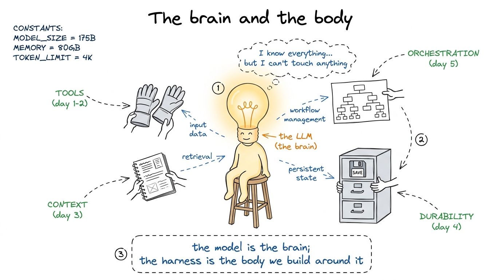
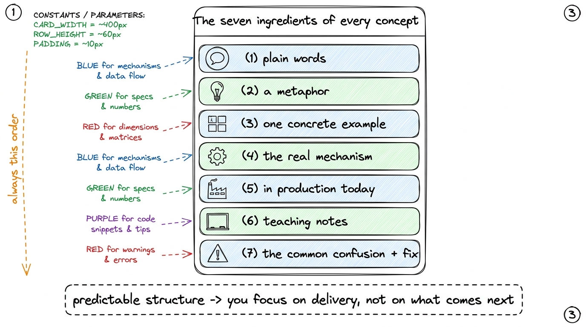
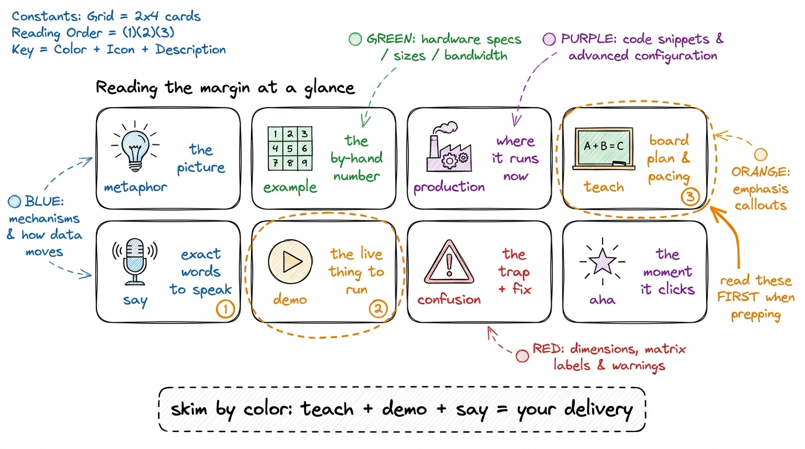
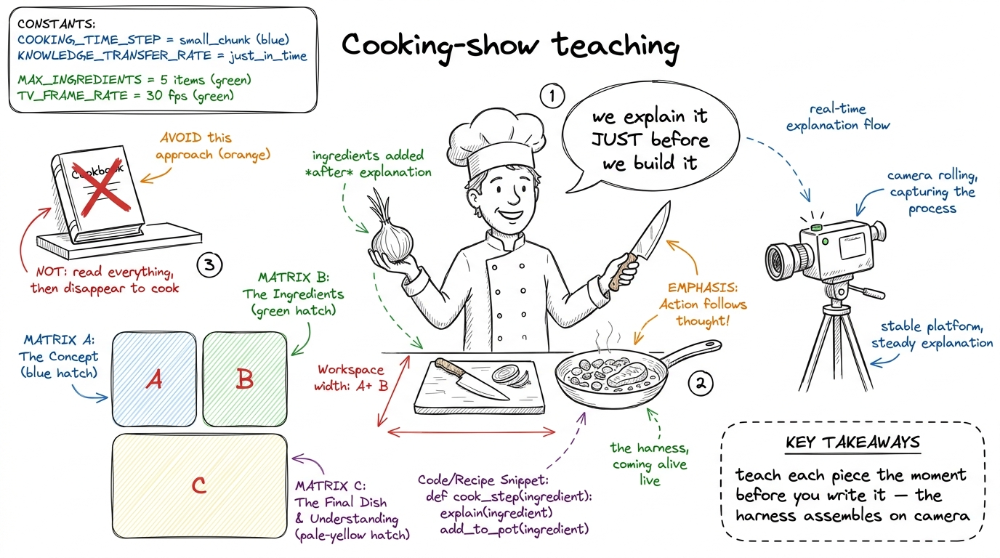
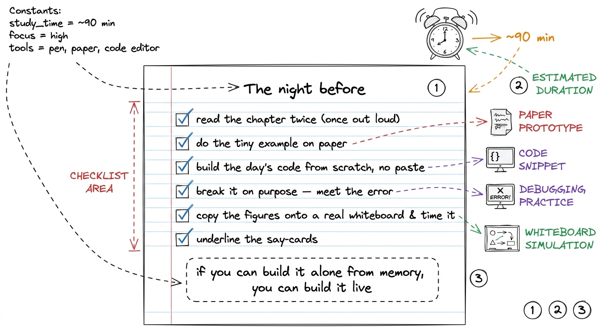

How to use this handbook
By the end of this chapter you can walk into any of the five live days, open the matching chapter of this handbook, and turn it into a two-hour session where you teach a layer of the harness while you build it live with the cohort — calm, unhurried, and never bluffing. This chapter is about the handbook itself: how it's built, why it's built that way, and the exact ritual for prepping a day from it.
Let me say the most important thing first, plainly. This is not a book you read to the room. It is a book you read before the room, until the idea is yours — and then you close it, stand up, and rebuild the idea live with your students watching. The handbook is the rehearsal. The live day is the performance. Keep those two separate in your head and everything gets easier.
What we are actually building over five days
So you never lose the plot, hold the whole arc in one sentence. We are building a coding-agent harness — the software that wraps a large language model and turns it from a chatbot into something that can actually do work on a real computer: read your files, run commands, edit code, remember what it's doing, and recover when it fails. Tools like Claude Code, pi, and Cursor are exactly this. The model is the brain; the harness is the body.

figure rendering · The whole workshop in one picture: five days of building a body aroundEach day adds one part of the body. Day by day the loop gets a little more alive. By Friday the cohort has built something that feels like pi. That progression — brain alone, then hands, then memory, then safety, then a team — is the spine of the course, and every chapter in this handbook is one vertebra.
The seven ingredients — the recipe behind every chapter
Every concept in this handbook is served with the same seven things, always in the same order. This is deliberate. When the structure is predictable, you stop worrying about what comes next and put all your energy into delivering the thing in front of you. Here is the recipe, and it is also the recipe you'll use at the whiteboard.

figure rendering · The fixed recipe: seven ingredients, same order, every single concept.Why this exact order? Because it mirrors how a human actually learns. You meet the shape of the idea in plain words. The metaphor gives you something to hold. The tiny number makes it real. Only then are you ready for the mechanism — and by that point it feels obvious rather than dropped from the sky. The production link tells you it matters. And the teaching notes plus the confusion fix are for you, the mentor, so you can hand the whole thing to the room without stumbling.
The callout blocks — how to read the margin
Scattered through every chapter are colored cards. Each one is one of the seven ingredients, pulled out so it catches your eye. Learn to read them at a glance, because on prep morning you'll skim by color.
There are eight kinds. metaphor is the picture. example is the tiny by-hand number. production is where it runs in the real world today. teach is the board plan and pacing. say is the literal line to speak. demo is the live thing to run. confusion is the trap and its fix. aha is the moment that makes the room light up. When you skim a chapter to prep, read the teach, demo, and say cards first — those three are your delivery. Then read the confusion cards, because those are the questions coming at you.

figure rendering · The eight callout types, and which three to read first on prep morning1 The example and demo cards look similar but do different jobs. An example is something you walk through on the board with a pen — a traced loop, a fake tool call. A demo is something you actually run on the projector — real code, real output. Board first, then screen: the board builds the mental model, the screen proves it's real.
Learn the layer, then teach it while you build it
This is the heart of the workshop's method, so slow down here. Most technical teaching is: explain everything, then build. We do the opposite. We build the layer live and teach each piece the moment before we write it. The cohort watches the harness come alive under your hands, one function at a time. This is why the workshop is unforgettable — and it's also why prep matters.

figure rendering · Live-build teaching as a cooking show: explain the step, then do the sgit checkout if you get truly stuck, but try to fix it live first.Production is not optional — always name the real tool
Every chapter ties its idea to something running right now in Claude Code, pi, or Cursor. Do not skip these. A student who hears "the tool loop is how Claude Code edits your files" leans in; the abstraction becomes a thing they've used. You are not teaching a toy — you are teaching the exact mechanism inside the tools sitting on their laptops.
rm -rf-ing your repo. Subagents on day five are how one agent spawns helpers to work in parallel. Every layer we build has a named twin shipping to millions of users today.The prep ritual — one page, the night before
Here's the exact routine for turning a chapter into a live day. Do it once and it becomes second nature.

figure rendering · The night-before ritual as a six-item checklist — the whole prep in onShape of a live morning (7:00–9:00 AM IST)
Every live day is a two-hour morning built from three or four blocks, and every block follows the same tiny arc: teach the piece (board) → build the piece (screen) → run it → one checkpoint question. Here's the default skeleton you'll adapt per day.
- 7:00–7:15 — Recap and today's goal. Redraw yesterday's harness on the board. Say the one sentence for today: "yesterday it could X; today we give it the power to Y."
- 7:15–7:55 — Block 1: teach + build the core piece. Metaphor and tiny example on the board (10 min), then write the code live (20 min), then run it and watch it work (10 min). Checkpoint question to the room.
- 7:55–8:35 — Block 2: extend it and break it. Add the next feature live, deliberately hit the common confusion, debug it together. This is where the real learning lands.
- 8:35–8:55 — Block 3: tie it to production. Show the same idea inside Claude Code or pi. Let the cohort feel "we just built a real version of that."
- 8:55–9:00 — Close. Restate today's one sentence, preview tomorrow's layer, one checkpoint question they'll answer tomorrow.
You can now teach
- What the handbook is for: a rehearsal you master privately, then close and rebuild live — not a script you read to the room.
- The five-day arc: building a body (tools, context, durability, orchestration) around a borrowed brain (the LLM), one layer per day.
- The seven ingredients and why they're always in that order — and that ingredients 1–5 are your lesson plan, 6–7 are your director's notes.
- How to skim by callout color: read the teach, demo, and say cards first, then the confusion cards, when prepping a day.
- The live-build method: teach each piece the moment before you write it, on camera, cooking-show style — and treat a live break as a gift.
- The prep ritual and the morning skeleton: the six-step night-before checklist, and the teach → build → run → checkpoint arc that fills a 7–9 AM block.